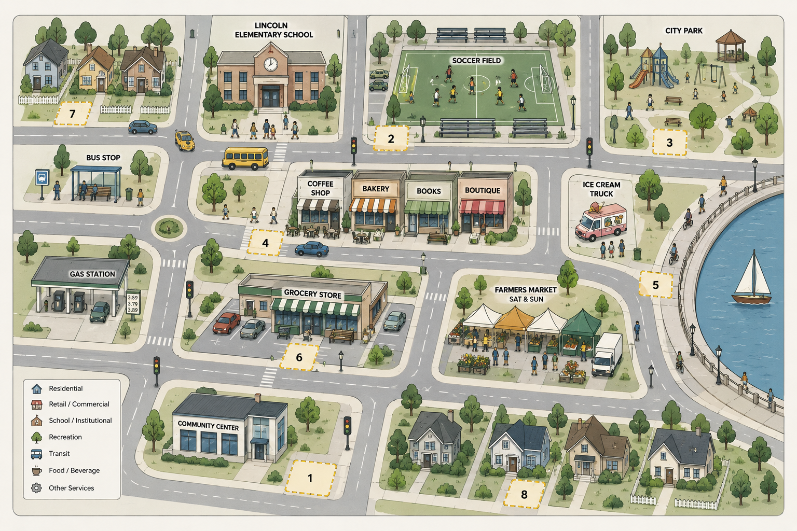

Module 02 · Part 1 — Build the business
Which corner gets the stand?
Bring these into the chat:
Don't know where to find these?

Eight corners, eight different afternoons. Thirsty kids pour off the soccer field (location 2) the moment a game ends, and their parents will pay for cold-and-now. The waterfront path runs with joggers and walkers all week, and nobody out there sells a cold drink. School pickup is a daily, price-sensitive crush. And at the farmers market, Hansen already owns Sunday at $6 a cup. The map in front of you shows roads and foot traffic — it shows none of that.
1Ask for the best corner, cold
Open Claude, drop in the map, and ask it flat — the way most people would start:
It will answer, and the answer will sound reasonable. But all it has is the map, so it rewards foot traffic and picks something plausible — blind to who's actually there at 3pm and to who already owns the corner.
2Hand it what only you know
Bring your three personas back in, add the local facts, and ask it to rank with reasons:
Now the ranking comes back reasoned — it can weigh the soccer field's cold-and-now crowd against Hansen's hold on the market, and it can name what it still doesn't know. Same map as a minute ago; what changed is everything you handed it.
Why your head still matters
Local knowledge still matters
Much of what a corner is really like was never written down — who's there at 3pm, who already owns Sunday, where a permit is or isn't needed. Claude can only work with what you give it. That part has to come from you.
Checkpoint
Did your final pick come from the map and the numbers alone — or from something you know that never made it into the chat?
Surface what it assumed
Ask it this, then read the list against what you know:
Hansen flat-out said he'd never sell at the soccer field or the school — wrong customer for him, perfect for you. That kind of read isn't on the map.
Your corner — chosen with what you know, not just what Claude could see.
AI is only as good as the context you bring it. You compared Claude's pick with your own, and the difference was the local knowledge you added.
A convincing ranking built on what it could see is still blind to what it couldn't.
Before you move on →
Answer the three reflections on the right while your corner is fresh in mind. They're your takeaway from this module, and they go into your final report.
Reflect
Which corner did you choose — and did it match Claude's pick?
Name the spot and whether you agreed.
What did you know about these corners that never made it into the chat?
The local detail that tipped it.
In the era of AI, do people still need to build their own expertise — and how?
Your honest take.
You can now say: the model is only as good as the context you bring it.